Pathway · Photography
Photography
Frederic Allen Williams photographed his own work, himself and the places he visited, and lectured with the results. These 46 items are from his collections at the Harry Ransom Center.
Titles come from the captions supplied with the images. Titles in square brackets were written for this site where no caption existed. Slides of Williams's work · Slides of Williams · Lantern slides of towns · Slides of Indigenous people · Ephemera
Slides of Williams's work
“These are slides of Williams work. They are his records, both used to show people what he made, as well as in lectures. “The Arrowmaker” is Williams’ most famous piece. Also, you can tell that the “Maid of Taos,” “Taos Girl and Deer,” and “Madonna” are all based off the woman from Bert Phillip’s patio/studio.”
— Jesse Ritner, PhD, Frederic Allen Williams: A Citizen Artist with a Magic Lantern
 HRC-5188Deer Dance Relief
HRC-5188Deer Dance Relief HRC-5192The Arrowmaker
HRC-5192The Arrowmaker HRC-5196Maid of Taos
HRC-5196Maid of Taos HRC-5198Buffalo Dancer
HRC-5198Buffalo Dancer HRC-5201Taos Girl and Deer
HRC-5201Taos Girl and Deer HRC-5202Maid at Taos – Glazed
HRC-5202Maid at Taos – Glazed HRC-5206Madonna
HRC-5206Madonna HRC-5207Shrine of the Americas: Plains – Andes – Mayas – Chimú – Jungles
HRC-5207Shrine of the Americas: Plains – Andes – Mayas – Chimú – Jungles HRC-5209Aztec Turkeys – mask – Garden Garniture
HRC-5209Aztec Turkeys – mask – Garden Garniture HRC-5210Shrine to Americas: West Indies-Pueblo-Alacken-Aztec-Eskimo
HRC-5210Shrine to Americas: West Indies-Pueblo-Alacken-Aztec-EskimoSlides of Williams
“These lantern slides are all images of Williams. The collection includes photos of him in his studio in New York City, as well as images of him dressed in costumes of “Mexicans” and of various Indian cultures. For more information on dressing up as Indians please refer to my further readings page.”
— Jesse Ritner, PhD, Frederic Allen Williams: A Citizen Artist with a Magic Lantern
 HRC-5129Black Lakes (near Taos)
HRC-5129Black Lakes (near Taos) HRC-5178Studio 1940
HRC-5178Studio 1940 HRC-5182Studio 1940
HRC-5182Studio 1940 HRC-5186Taos 1929-Modeling ‘The Sioux Worshipper' sun dial
HRC-5186Taos 1929-Modeling ‘The Sioux Worshipper' sun dial![[Williams with a horse at a log fence]](../photography/images/thumb/HRC-5213.jpg) HRC-5213[Williams with a horse at a log fence]
HRC-5213[Williams with a horse at a log fence]![[Portrait of Williams in autumn]](../photography/images/thumb/HRC-5219.jpg) HRC-5219[Portrait of Williams in autumn]
HRC-5219[Portrait of Williams in autumn] HRC-5221With Hoffmann-palaniun
HRC-5221With Hoffmann-palaniun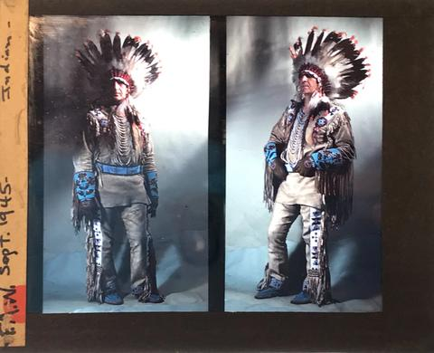
HRC-5223Sept. 1945 IndianCommunity review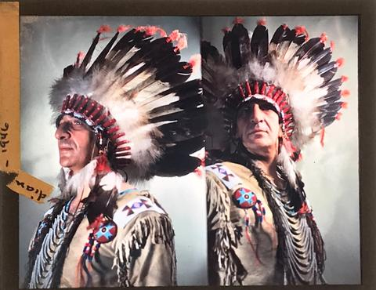
HRC-5226Indian – 1946Community review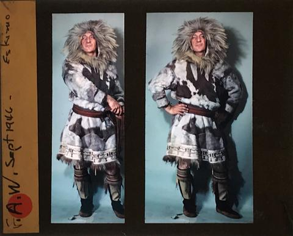
HRC-5227September 1946 – EskimoCommunity review![[Williams in an embroidered western shirt with a saddle]](../photography/images/thumb/HRC-5229.jpg) HRC-5229[Williams in an embroidered western shirt with a saddle]
HRC-5229[Williams in an embroidered western shirt with a saddle]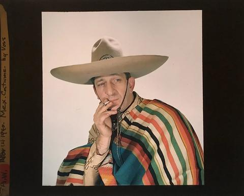
HRC-5231Nov 14 1940 – Mex.Costume – by VossCommunity reviewLantern slides of towns
“This collection of lantern slides depicts three different towns: Taos, Taos Pueblo, and Red River City. All three are on ancestral Taos land. The three towns here demonstrate the variations on how people lived at the same time within a relatively local area.”
— Jesse Ritner, PhD, Frederic Allen Williams: A Citizen Artist with a Magic Lantern


Slides of Indigenous people
Portraits made in Taos, several in the painter Bert Phillips's studio and patio. Most sitters are unnamed; a few slides carry first names.
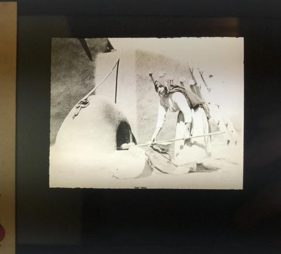
HRC-5098-edit[Woman baking at an horno]Community review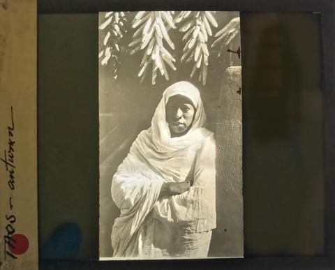
HRC-5100-editautumnCommunity review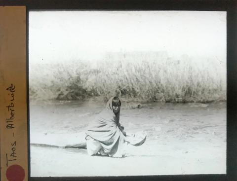
HRC-5107Alberto's wifeCommunity review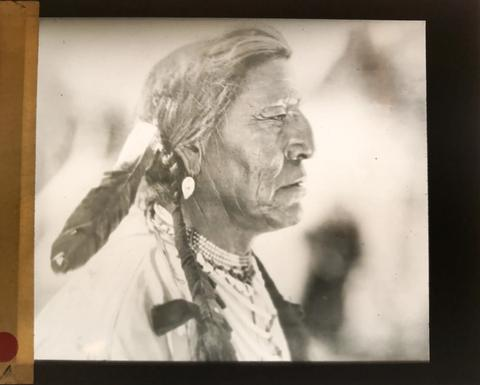
HRC-5108[Portrait of a man in profile with an eagle feather]Community review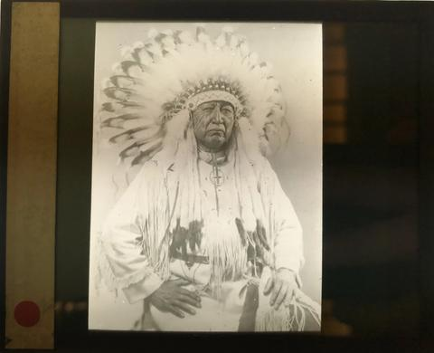
HRC-5110[Portrait of a man in a feather headdress]Community review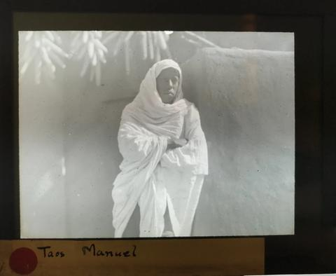
HRC-5132ManuelCommunity review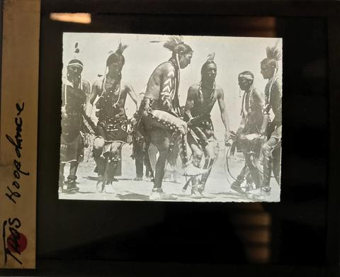
HRC-5139Taos Hoop DanceCommunity review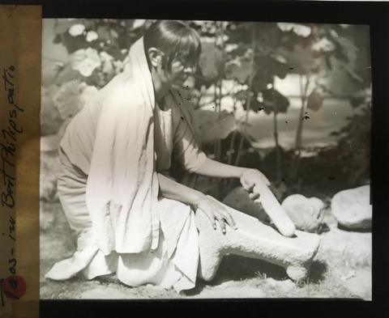
HRC-5151in Bert Phillip's PatioCommunity review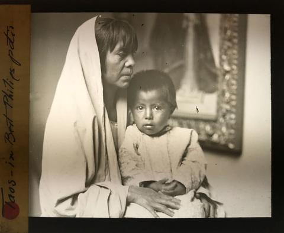
HRC-5153in Bert Phillips' patioCommunity review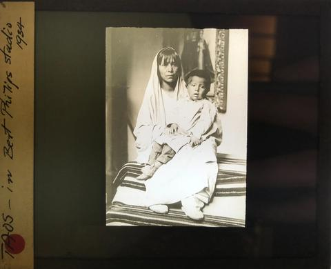
HRC-5154in Bert Phillips' studio, 1934Community review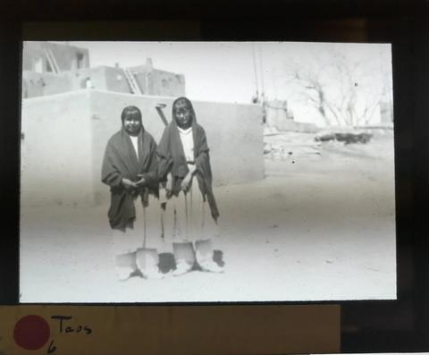
HRC-5164[Two women at Taos Pueblo]Community reviewEphemera
Printed matter from the Frederic Allen Williams Photograph Collection, series III, container 57: his lecture brochures and a 1948 biography.
![[Reprint from "International Who's Who," January 1948]](../photography/images/thumb/HRC-4849.jpg) HRC-4849[Reprint from "International Who's Who," January 1948]
HRC-4849[Reprint from "International Who's Who," January 1948]![[Brochure cover: "Frederic Allen Williams, Tenth Year of Lectures on the Arts of the Americas, Illustrated in Color"]](../photography/images/thumb/HRC-4850-2.jpg) HRC-4850-2[Brochure cover: "Frederic Allen Williams, Tenth Year of Lectures on the Arts of the Americas, Illustrated in Color"]
HRC-4850-2[Brochure cover: "Frederic Allen Williams, Tenth Year of Lectures on the Arts of the Americas, Illustrated in Color"]![[Brochure page: "Solidarity of the Americas"]](../photography/images/thumb/HRC-4851.jpg) HRC-4851[Brochure page: "Solidarity of the Americas"]
HRC-4851[Brochure page: "Solidarity of the Americas"]![[Brochure page: lecture descriptions and press notices]](../photography/images/thumb/HRC-4853.jpg) HRC-4853[Brochure page: lecture descriptions and press notices]
HRC-4853[Brochure page: lecture descriptions and press notices]![[Brochure spread: the Shrine of the Americas]](../photography/images/thumb/HRC-4854-2.jpg) HRC-4854-2[Brochure spread: the Shrine of the Americas]
HRC-4854-2[Brochure spread: the Shrine of the Americas]![[Brochure page: the Shrine of the Americas and Williams's Kodachrome slide collection]](../photography/images/thumb/HRC-4872.jpg) HRC-4872[Brochure page: the Shrine of the Americas and Williams's Kodachrome slide collection]
HRC-4872[Brochure page: the Shrine of the Americas and Williams's Kodachrome slide collection]![[Williams on horseback in a parade]](../photography/images/thumb/HRC-4879.jpg) HRC-4879[Williams on horseback in a parade]
HRC-4879[Williams on horseback in a parade]Harry Ransom Center notice
This material is made available for education and research purposes only. The Harry Ransom Center does not own the rights for these items; it cannot grant or deny permission to use this material. Rights holders may be listed in the WATCH file. Upon request, material will be removed from public view while a rights issue is addressed.